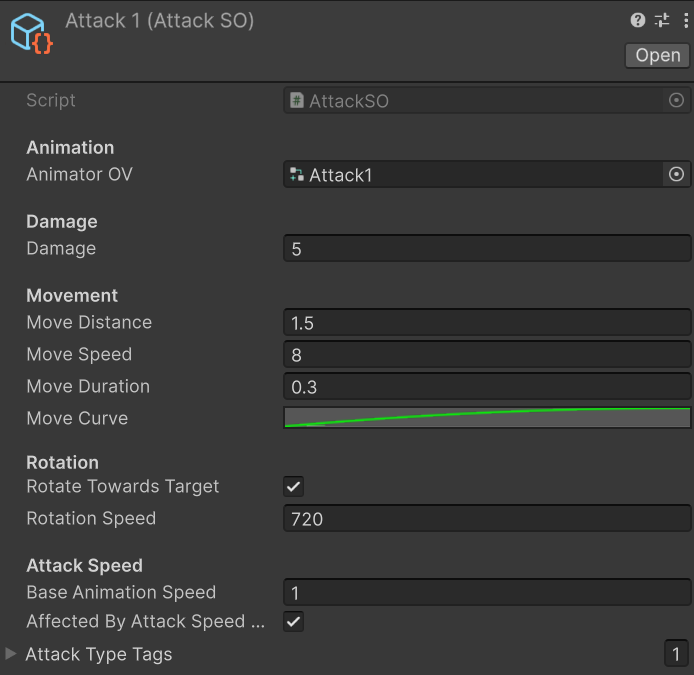
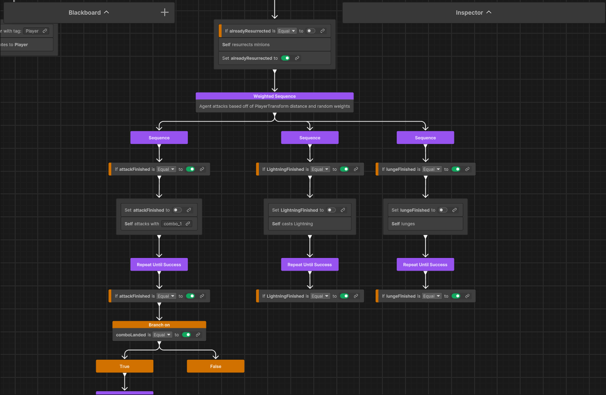

Project Overview
Mechanisoul is an advanced Unity project developed at DreamStatic Studios, serving as a masterclass in sophisticated game architecture and modular systems design. As the Lead Programmer, Animator, and Music Composer, I was responsible for bridging the gap between technical implementation and creative direction, ensuring the hack-and-slash combat felt both responsive and production-ready.
ScriptableObject Combat Framework
To solve the challenge of rapid balancing and iteration, I engineered a data-driven combat framework using ScriptableObjects. By decoupling attack data from logic, designers could define complex weapon properties, damage curves, and combo sequences as assets. This empowered the creative team to build 11.2 million potential powerup combinations without requiring code recompilation.
Modular Character Controller
The character controller utilizes a robust State Pattern implementation. This architecture manages transitions between grounded movement, aerial maneuvers, and high-precision combat states. The system maintains a clean separation of concerns, integrating an event-driven animation system that synchronizes frame-perfect hitboxes with visual feedback.

Architecture: ScriptableObject-driven weapon and ability framework for rapid design iteration.

AI Systems: Modular Behavior Tree implementation allowing for configurable decision-making and stalking logic.
AI & Targeting Systems
Modular Behavior Trees
The enemy AI is driven by a custom Behavior Tree system. By utilizing a Blackboard architecture, the AI can make intelligent decisions based on player distance, visibility, and combat state. This modular approach allows for a wide variety of enemy archetypes to be created using shared behavioral nodes.
Advanced Lock-On Targeting
Inspired by classic 3D action titles, I developed a Zelda-style lock-on system. It features smooth camera interpolation, proximity-based target acquisition, and prioritized layering, ensuring that the player always has mechanical clarity during chaotic, high-mobility encounters.